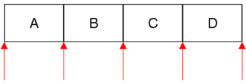

QSetIterator Class
The QSetIterator class provides a Java-style const iterator for QSet. More...
| Header: | #include <QSetIterator> |
| qmake: | QT += core |
Public Functions
| QSetIterator(const QSet<T> &set) | |
| QSetIterator<T> & | operator=(const QSet<T> &container) |
| bool | findNext(const T &value) |
| bool | findPrevious(const T &value) |
| bool | hasNext() const |
| bool | hasPrevious() const |
| const T & | next() |
| const T & | peekNext() const |
| const T & | peekPrevious() const |
| const T & | previous() |
| void | toBack() |
| void | toFront() |
Detailed Description
QSet supports both Java-style iterators and STL-style iterators. The Java-style iterators are more high-level and easier to use than the STL-style iterators; on the other hand, they are slightly less efficient.
QSetIterator<T> allows you to iterate over a QSet<T>. If you want to modify the set as you iterate over it, use QMutableSetIterator<T> instead.
The constructor takes a QSet as argument. After construction, the iterator is located at the very beginning of the set (before the first item). Here's how to iterate over all the elements sequentially:
QSet<QString> set; ... QSetIterator<QString> i(set); while (i.hasNext()) qDebug() << i.next();
The next() function returns the next item in the set and advances the iterator. Unlike STL-style iterators, Java-style iterators point between items rather than directly at items. The first call to next() advances the iterator to the position between the first and second item, and returns the first item; the second call to next() advances the iterator to the position between the second and third item, returning the second item; and so on.

Here's how to iterate over the elements in reverse order:
QSetIterator<QString> i(set); i.toBack(); while (i.hasPrevious()) qDebug() << i.previous();
If you want to find all occurrences of a particular value, use findNext() or findPrevious() in a loop.
Multiple iterators can be used on the same set. If the set is modified while a QSetIterator is active, the QSetIterator will continue iterating over the original set, ignoring the modified copy.
See also QMutableSetIterator and QSet::const_iterator.
Member Function Documentation
bool QSetIterator::findPrevious(const T &value)
Searches for value starting from the current iterator position backward. Returns true if value is found; otherwise returns false.
After the call, if value was found, the iterator is positioned just before the matching item; otherwise, the iterator is positioned at the front of the container.
See also findNext().
bool QSetIterator::findNext(const T &value)
Searches for value starting from the current iterator position forward. Returns true if value is found; otherwise returns false.
After the call, if value was found, the iterator is positioned just after the matching item; otherwise, the iterator is positioned at the back of the container.
See also findPrevious().
const T &QSetIterator::peekPrevious() const
Returns the previous item without moving the iterator.
Calling this function on an iterator located at the front of the container leads to undefined results.
See also hasPrevious(), previous(), and peekNext().
const T &QSetIterator::previous()
Returns the previous item and moves the iterator back by one position.
Calling this function on an iterator located at the front of the container leads to undefined results.
See also hasPrevious(), peekPrevious(), and next().
bool QSetIterator::hasPrevious() const
Returns true if there is at least one item behind the iterator, i.e. the iterator is not at the front of the container; otherwise returns false.
See also hasNext() and previous().
const T &QSetIterator::peekNext() const
Returns the next item without moving the iterator.
Calling this function on an iterator located at the back of the container leads to undefined results.
See also hasNext(), next(), and peekPrevious().
const T &QSetIterator::next()
Returns the next item and advances the iterator by one position.
Calling this function on an iterator located at the back of the container leads to undefined results.
See also hasNext(), peekNext(), and previous().
bool QSetIterator::hasNext() const
Returns true if there is at least one item ahead of the iterator, i.e. the iterator is not at the back of the container; otherwise returns false.
See also hasPrevious() and next().
void QSetIterator::toBack()
Moves the iterator to the back of the container (after the last item).
See also toFront() and previous().
void QSetIterator::toFront()
Moves the iterator to the front of the container (before the first item).
QSetIterator<T> &QSetIterator::operator=(const QSet<T> &container)
Makes the iterator operate on set. The iterator is set to be at the front of the set (before the first item).
See also toFront() and toBack().
QSetIterator::QSetIterator(const QSet<T> &set)
Constructs an iterator for traversing set. The iterator is set to be at the front of the set (before the first item).
See also operator=().